Nanomedicina și biologia sintetică
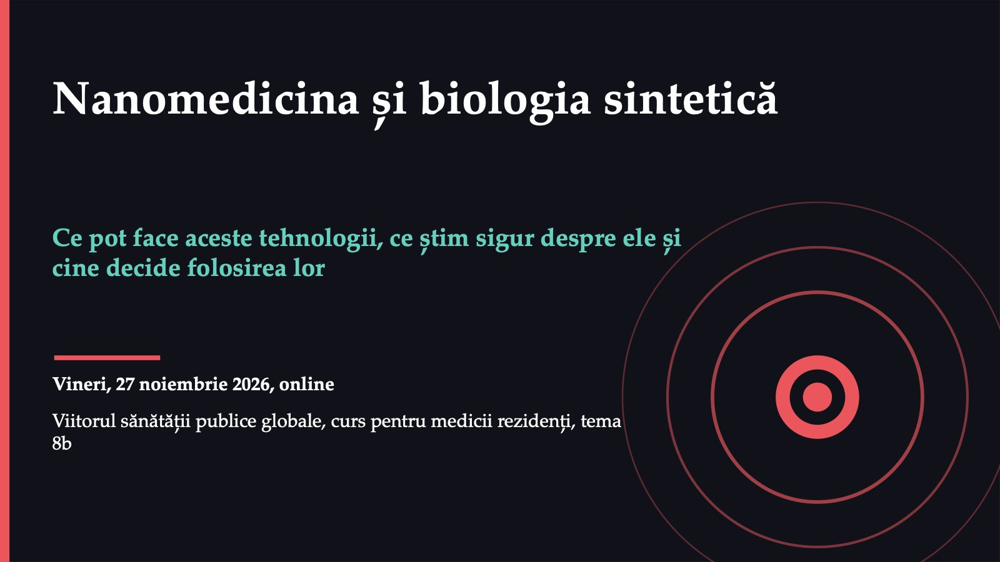
1 / 49Bună dimineața. Azi lucrăm pe trei documente reale, câte unul pe fiecare parte a ședinței, și din fiecare scrieți un text pe care îl scrie, în meserie, un specialist de sănătate publică: un răspuns către o direcție de sănătate publică, o notă pentru minister și propunerea unui comitet de reglementare.
O întrebare care ajunge la direcția de sănătate publică
![Situație ipotetică DESCHIDEREA: TREI DOCUMENTE REALE, TREI PRODUSE O întrebare care ajunge la direcția de sănătate publică Un pacient a citit că vaccinul folosește o tehnologie „nanometrică” netestată și îl întreabă pe medicul de familie dacă poate avea încredere. Medicul de familie trimite întrebarea mai departe: ce s-a verificat, de fapt, înainte ca vaccinul să fie autorizat? Răspunsul îl scrie un specialist de sănătate publică. Trebuie să fie scurt, scris și să poată fi verificat în documentul oficial.](diapozitive/C09/002.jpg) 2 / 49
2 / 49Este o întrebare pe care o primește, în practică, orice specialist de sănătate publică. Răspunsul nu se caută în comentarii, ci în documentul pe care agenția l-a publicat la autorizare.
Azi avem trei părți. Fiecare pornește de la un document real și se încheie cu un text scris de dumneavoastră.
![DESCHIDEREA: TREI DOCUMENTE REALE, TREI PRODUSE Azi avem trei părți. Fiecare pornește de la un document real și se încheie cu un text scris de dumneavoastră. Partea întâi: raportul agenției europene care a evaluat vaccinul Comirnaty. Scrieți răspunsul către direcția de sănătate publică. Partea a doua: autorizarea europeană a primei terapii prin editarea genomului și evaluarea britanică a costului ei. Scrieți o notă pentru minister. Partea a treia: ce spun Organizația Mondială a Sănătății și Convenția de la Oviedo despre editarea embrionilor. Scrieți propunerea unui comitet pentru România.](diapozitive/C09/003.jpg) 3 / 49
3 / 49Ordinea urmează temele prezentării: întâi nanoparticula lipidică din vaccinul cu acid ribonucleic mesager (ARN mesager), apoi prima terapie prin editarea genomului cu autorizație europeană, apoi editarea embrionilor umani și ce se poate reglementa. Niciuna dintre cele trei părți nu are concluzia scrisă dinainte; concluziile le scrieți dumneavoastră.
Cum lucrăm online: o singură pagină
![DESCHIDEREA: TREI DOCUMENTE REALE, TREI PRODUSE Cum lucrăm online: o singură pagină Intrați acum pe menti.com, cu codul 2404 5986, sau scanați codul QR. Nu vă trebuie cont; merge pe telefon și pe laptop. Lăsați pagina deschisă până la sfârșit: întrebările apar acolo singure, când ajungem la ele. Opiniile sunt anonime; nu există răspunsuri corecte. Sarcinile de grup le scrieți în camerele separate, într-un document al grupului. La întoarcere, unul dintre voi trimite în Mentimeter numai fragmentele cerute, de cel mult 200 de caractere, începând cu numărul grupului. La sfârșitul ședinței, o singură dată, puteți lipi textele întregi pe un perete Padlet, dacă vreți să le păstrați. menti.com, fără cont](diapozitive/C09/004.jpg) 4 / 49
4 / 49Pe telefon nu vă cerem nimic care să aibă o soluție dinainte. Țineți documentele deschise într-o filă separată; legăturile sunt în chatul ședinței. Un joc scurt de verificare a conceptelor încheie ședința.
Partea întâi pornește de la un document public
 5 / 49
5 / 49Raportul se poate citi direct: ce conține vaccinul, ce studii de distribuție în organism s-au făcut și cu ce anume, ce nu s-a studiat, ce obligații i-au fost impuse producătorului după autorizare și ce se știa despre reacțiile alergice grave.
În Mentimeter, într-un singur rând: prima frază a răspunsului pe care l-ați da acum direcției de sănătate publică.
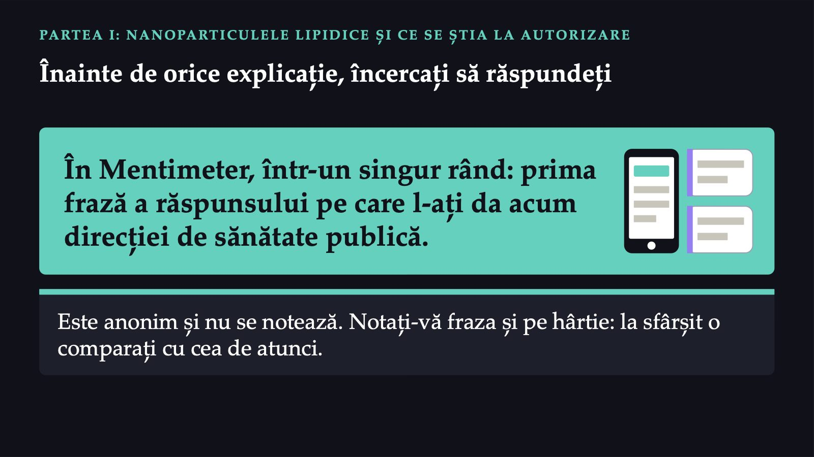
6 / 49Scrieți ce ați răspunde acum, cu ce știți în acest moment. La sfârșit vedeți fiecare dacă prima frază a rămas aceeași.
De ce contează scara: ce înseamnă „nano”
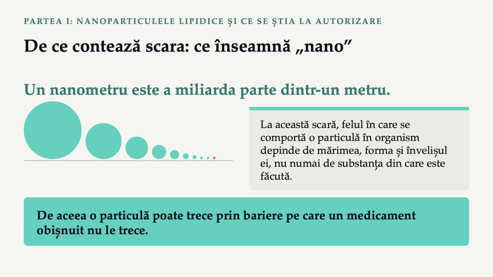
7 / 49Nanomedicina este aplicarea nanotehnologiei în diagnostic și tratament. Interesul nu este dimensiunea în sine, ci faptul că un material împărțit la această scară se comportă altfel decât în masă: suprafața devine foarte mare față de volum, iar comportamentul particulei în organism ține mai mult de înveliș decât de substanța din interior.
Patru familii de nanoparticule, după materialul din care sunt făcute
![PARTEA I: NANOPARTICULELE LIPIDICE ȘI CE SE ȘTIA LA AUTORIZARE Patru familii de nanoparticule, după materialul din care sunt făcute Nanoparticulele lipidice, făcute din grăsimi, închid în ele acizi nucleici. Ele sunt vehiculul vaccinurilor cu ARN mesager. Nanoparticulele polimerice eliberează un medicament încet, pe o perioadă mai lungă. Nanoparticulele de aur sau de oxid de fier pot încălzi și distruge local un țesut tumoral sau pot servi ca substanță de contrast. Dendrimerii, molecule ramificate, duc acizi nucleici în interiorul celulei.](diapozitive/C09/008.jpg) 8 / 49
8 / 49Gruparea este cea din prezentarea temei. Particulele de oxid de fier servesc atât de substanță de contrast la examenul prin rezonanță magnetică nucleară (RMN), cât și de sursă de căldură locală; în imagistică, beneficiul nanoparticulei se măsoară mai ales în siguranță și în accesul la examinare. Detaliile despre nanoparticulele inorganice sunt în note.
Ce promite un vehicul nanometric și ce dă în realitate
![PARTEA I: NANOPARTICULELE LIPIDICE ȘI CE SE ȘTIA LA AUTORIZARE Ce promite un vehicul nanometric și ce dă în realitate Promisiunea: particula protejează medicamentul, îl eliberează treptat și se strânge mai ales în țesutul bolnav. În realitate, efectul diferă mult de la un pacient la altul, iar în tumoră ajunge doar o parte foarte mică din doza injectată. În cancer, vasele tumorii sunt neregulate și lasă particulele să intre și să rămână acolo. Fenomenul se numește efectul de permeabilitate și retenție crescute.](diapozitive/C09/009.jpg) 9 / 49
9 / 49Vasele tumorale sunt neregulate și permeabile, iar drenajul limfatic este deficitar, deci particula ar trebui să intre în tumoră și să rămână acolo. Efectul variază însă mult de la o tumoră la alta și de la un pacient la altul. La forma liposomală de doxorubicină, potrivit prezentării, câștigul urmărit nu a fost o eficacitate mai mare, ci o toxicitate cardiacă mai mică. Pentru sănătatea publică, beneficiul poate sta pe partea de siguranță, iar evaluarea tehnologiei trebuie să-l caute acolo.
Din ce este făcută particula din vaccin: patru componente
![PARTEA I: NANOPARTICULELE LIPIDICE ȘI CE SE ȘTIA LA AUTORIZARE Din ce este făcută particula din vaccin: patru componente ARN mesagerul modificat este substanța activă. Lipidul ALC-0315 se leagă de ARN și îl eliberează în interiorul celulei. De el depinde dacă vaccinul funcționează. Lipidul ALC-0159 acoperă suprafața particulei. El conține polietilenglicol, iar în jurul lui s-a discutat despre reacțiile alergice grave. Un fosfolipid și colesterolul dau particulei structură și stabilitate. Sursa: raportul, pagina 14.](diapozitive/C09/010.jpg) 10 / 49
10 / 49Lipidul ionizabil este neutru la aciditatea sângelui și încărcat pozitiv în interiorul veziculei celulare: leagă acidul nucleic și, odată intrat în celulă, destabilizează membrana veziculei, astfel încât încărcătura ajunge în citoplasmă. Aici se joacă eficacitatea întregii platforme. Lipidul legat de polietilenglicol împiedică agregarea particulelor și prelungește circulația.
Doi lipizi erau substanțe noi: ce a cerut agenția
![PARTEA I: NANOPARTICULELE LIPIDICE ȘI CE SE ȘTIA LA AUTORIZARE Doi lipizi erau substanțe noi: ce a cerut agenția Raportul îi trece pe ALC-0315 și ALC-0159 între excipienții noi, adică substanțe auxiliare, nu substanța activă. Producătorul a fost obligat să trimită informații suplimentare despre felul în care acești lipizi sunt fabricați și controlați. ianuarie aprilie iulie 2021 Termenul final a fost iulie 2021, cu rapoarte intermediare în ianuarie și aprilie 2021 (raportul, paginile 139–140). Așa arată o autorizare condiționată: ce lipsește este cerut în scris și cu termen.](diapozitive/C09/011.jpg) 11 / 49
11 / 49Aceasta este deosebirea practică dintre „nu s-a verificat” și „s-a verificat cât era nevoie pentru a autoriza, iar restul a fost cerut în scris, cu termen”. Exact acest lucru îl datorați direcției de sănătate publică. Autorizarea condiționată nu înseamnă „aprobat fără verificări”, ci un set de obligații scrise pentru datele care lipsesc la momentul deciziei.
Unde ajunge vaccinul în organism: ce s-a studiat și pe ce
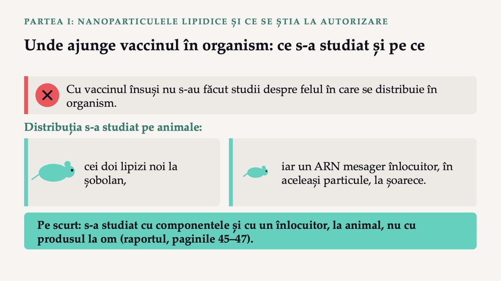
12 / 49Raportul consemnează explicit că studiile nu s-au făcut cu produsul, ci cu componentele și cu o moleculă surogat, la animal. Cei doi lipizi au fost eliminați rapid din plasmă, în primele douăzeci și patru de ore, apoi mai lent, iar ficatul apare ca organul principal de distribuție. Un document de evaluare se citește pe trei coloane: ce s-a demonstrat, cu ce model s-a demonstrat și ce nu s-a studiat.
Reacțiile alergice grave: ce s-a văzut în studiu și ce s-a văzut după autorizare
![PARTEA I: NANOPARTICULELE LIPIDICE ȘI CE SE ȘTIA LA AUTORIZARE Reacțiile alergice grave: ce s-a văzut în studiu și ce s-a văzut după autorizare În studiul principal nu a apărut niciun caz de anafilaxie (reacție alergică gravă) cauzat de vaccin. Au apărut însă mai multe reacții de tip alergic în grupul vaccinat decât în grupul placebo: 13 față de 6. Raportul consideră legătura cu vaccinul o „posibilitate rezonabilă”. grupul vaccinat 13 grupul placebo 6 După ce alte țări au început vaccinarea, au fost raportate trei cazuri de anafilaxie; toate s-au remis cu tratament (raportul, paginile 108–112).](diapozitive/C09/013.jpg) 13 / 49
13 / 49Cele trei cazuri de anafilaxie au apărut în campaniile țărilor care autorizaseră deja vaccinul, nu în studiul pivot; în planul de gestionare a riscului, anafilaxia este încadrată ca risc identificat important. Mențiunea despre hipersensibilitate din rezumatul caracteristicilor produsului vine din dezechilibrul din studiu, nu din aceste trei cazuri. Un eveniment rar nu apare într-un studiu de zeci de mii de participanți, ci în primele sute de mii sau milioane de administrări.
Autorizarea nu încheie evaluarea
![PARTEA I: NANOPARTICULELE LIPIDICE ȘI CE SE ȘTIA LA AUTORIZARE Autorizarea nu încheie evaluarea După autorizare, siguranța se urmărește în populație, prin farmacovigilență: raportarea și analiza efectelor adverse. Un efect foarte rar nu apare într-un studiu; el se vede abia după un număr foarte mare de doze. Răspunsul imediat este de organizare: pacientul rămâne sub observație după vaccinare, iar trusa de urgență și personalul instruit sunt pregătite. ? Cauza propusă ulterior este componenta cu polietilenglicol, dar mecanismul nu este încă bine înțeles.](diapozitive/C09/014.jpg) 14 / 49
14 / 49Lanțul se repetă la orice tehnologie nouă și merită reținut pentru răspunsul pe care îl scrieți: semnalul rar vine din populație, iar răspunsul imediat nu este științific, ci de organizare a punctului de vaccinare.
15 567 266
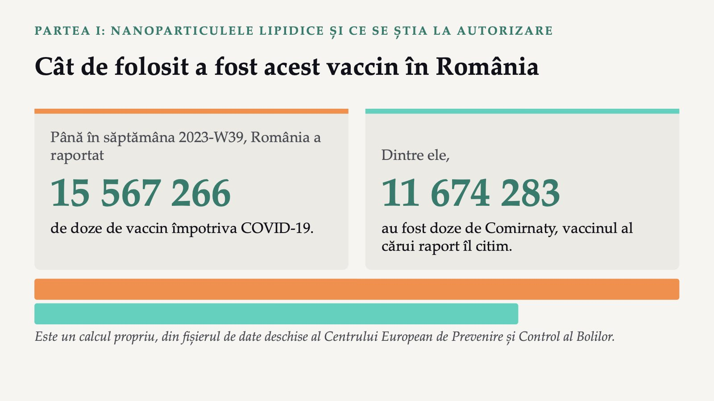
15 / 49Cifrele arată că întrebarea pacientului nu privește o tehnologie de nișă, ci produsul cel mai folosit în campania din România. Valoarea nu cuprinde categoriile de doză pe care fișierul nu le raportează pentru România, iar 2023-W39 este ultima săptămână cu raportare pentru România în această sursă.
?
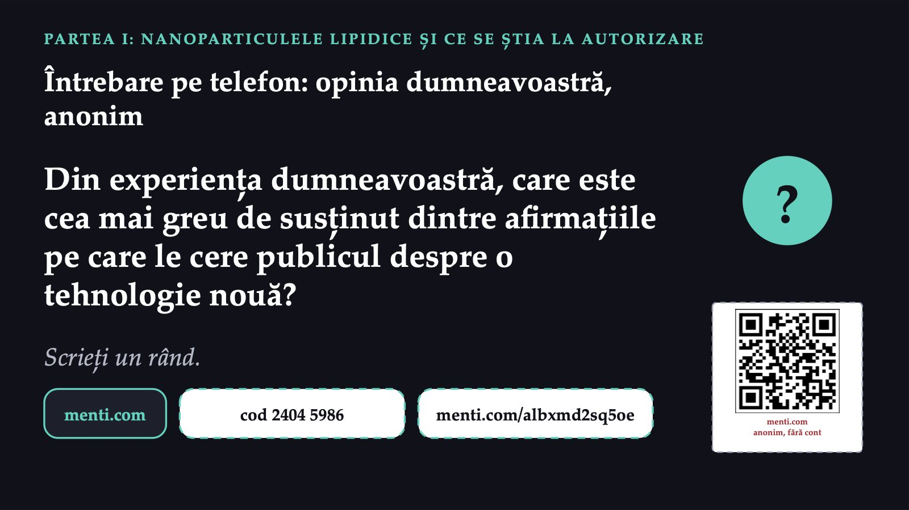
16 / 49Nu există o soluție dinainte: întrebarea vă pregătește pentru adresa pe care o scrieți acum.
Sarcina grupului: răspunsul direcției de sănătate publică (28 de minute)
![PARTEA I: NANOPARTICULELE LIPIDICE ȘI CE SE ȘTIA LA AUTORIZARE Sarcina grupului: răspunsul direcției de sănătate publică (28 de minute) Scrieți, într-un document al grupului, cel mult 250 de cuvinte, ca o adresă oficială, care răspunde la patru întrebări: 1. Ce s-a verificat înainte de autorizare și unde scrie asta în raport? 2. Ce nu s-a studiat și ce s-a făcut în loc? 3. Ce i s-a cerut producătorului după autorizare și până când? 4. Ce recomandați concret cabinetului sau centrului de vaccinare? La întoarcere trimiteți în Mentimeter, pe rând, numai răspunsurile la întrebările 2 și 4, pe scurt, cu pagina din raport.](diapozitive/C09/017.jpg) 17 / 49
17 / 49Lucrați în grupuri mici, în camerele separate ale platformei. Aveți raportul deschis; fiecare afirmație din adresă trebuie să poarte pagina. Nu există o soluție dinainte: comparăm formulările între grupuri și ne uităm la ce a fost afirmat fără acoperire în document.
Citim împreună, pe loc, cele două răspunsuri
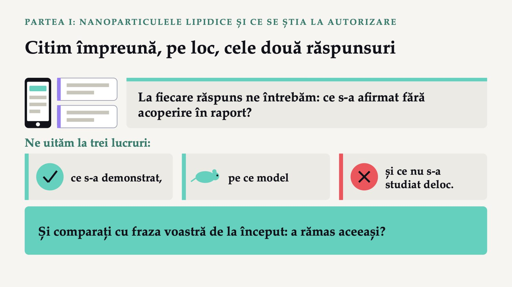
18 / 49Citim două sau trei răspunsuri la fiecare întrebare. Nu căutăm cel mai bun răspuns, ci locul în care o afirmație a mers mai departe decât pagina pe care o citează.
?
![PARTEA I: NANOPARTICULELE LIPIDICE ȘI CE SE ȘTIA LA AUTORIZARE Ce reținem din partea întâi Particula din vaccin are patru componente. Lipidul ionizabil decide dacă vaccinul funcționează; cel cu polietilenglicol a fost pus în legătură cu reacțiile alergice grave. O autorizare condiționată vine cu obligații scrise și termene pentru datele care lipsesc. ? Un document de evaluare se citește întrebând: ce s-a demonstrat, pe ce model și ce nu s-a studiat. Efectele foarte rare apar după autorizare; răspunsul imediat ține de organizarea vaccinării.](diapozitive/C09/019.jpg) 19 / 49
19 / 49Acestea sunt cele patru idei pe care le-ați folosit în adresă.
Pentru acasă: ce găsiți în note și nu am discutat azi
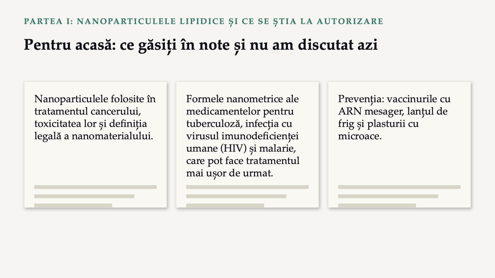
20 / 49O lecție pentru evaluarea tehnologiei rămâne din aceste secțiuni: în nanomedicină, câștigul poate veni pe partea de siguranță și de acces, nu pe partea de supraviețuire, iar o evaluare făcută numai pe eficacitate îl pierde.
Pauză de zece minute
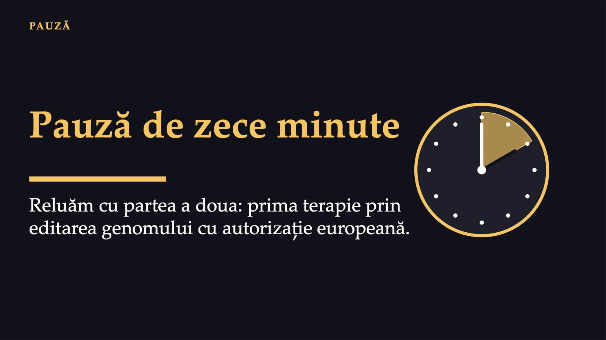
21 / 49Partea a doua: un medicament care modifică genele pacientului
![PARTEA A II-A: TERAPIA PRIN EDITAREA GENOMULUI ȘI DRUMUL PÂNĂ LA PACIENT Partea a doua: un medicament care modifică genele pacientului Casgevy (exagamglogen autotemcel) este prima terapie prin editarea genomului cu autorizație europeană și americană. Pentru talasemie are statut de medicament orfan, adică pentru o boală rară, din 17 octombrie 2019. În Uniunea Europeană a primit o autorizație condiționată la 9 februarie 2024. Este destinat bolnavilor de la 12 ani cu beta-talasemie care au nevoie de transfuzii regulate sau cu drepanocitoză severă.](diapozitive/C09/022.jpg) 22 / 49
22 / 49Autoritatea americană aprobase primele terapii genice pentru drepanocitoză la 8 decembrie 2023. Pe pagina europeană de autorizare se citesc indicația, vârsta, statutul de medicament orfan și rezultatul din studiul pe care se întemeiază autorizarea.
Ce a arătat studiul pe care se sprijină autorizarea
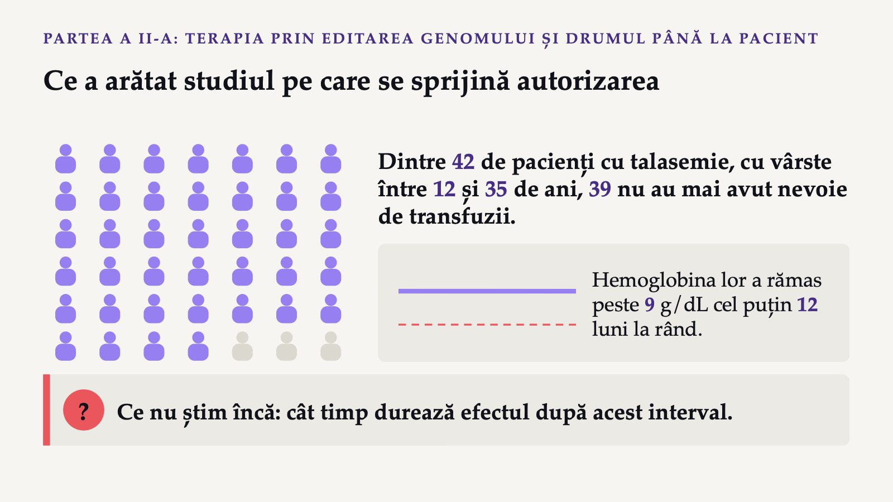
23 / 49Rezultatul este puternic și scurt în același timp. Pentru un tratament administrat o singură dată, durata pe care există date este exact ce decide incertitudinea modelului economic din recomandarea britanică.
Cum funcționează, pe scurt
![PARTEA A II-A: TERAPIA PRIN EDITAREA GENOMULUI ȘI DRUMUL PÂNĂ LA PACIENT Cum funcționează, pe scurt Celulele stem ale pacientului sunt recoltate și modificate în laborator, în afara corpului. Modificarea le face să producă mai multă hemoglobină fetală, care ține locul hemoglobinei adulte deficitare. Înainte să primească înapoi celulele, pacientul face o chimioterapie de condiționare, care face loc în măduvă celulelor modificate. Instrumentul de editare se numește CRISPR-Cas9: o moleculă-ghid găsește locul din genă, iar o enzimă taie acolo.](diapozitive/C09/024.jpg) 24 / 49
24 / 49Mecanismul este indirect: boala ține de hemoglobina adultă, iar tratamentul face celulele pacientului să producă mai multă hemoglobină fetală. Detaliile despre vectori și despre generațiile ulterioare de editare sunt în note; pentru nota către minister contează consecința organizatorică.
Somatic sau germinal: deosebirea care schimbă totul
 25 / 49
25 / 49Juridic, editarea somatică seamănă cu orice alt tratament. Cazul de azi este somatic; partea a treia privește cealaltă coloană.
Definitiv sau reversibil
 26 / 49
26 / 49Aceasta este fraza de împrumutat pentru nota dumneavoastră: un decident trebuie să știe, înaintea oricărei cifre, că tratamentul nu se poate opri.
Nu se cumpără un medicament, ci se organizează un drum al pacientului
 27 / 49
27 / 49Aceeași logică organizatorică o au celulele T cu receptor antigenic himeric: centru specializat, condiționare, urmărire lungă, protocoale scrise înainte de primul pacient. Autorizarea unui centru nu este o formalitate: certifică echipa, circuitul de urgență și capacitatea de urmărire.
Autorizat nu înseamnă accesibil: ce a decis evaluarea britanică
![PARTEA A II-A: TERAPIA PRIN EDITAREA GENOMULUI ȘI DRUMUL PÂNĂ LA PACIENT Autorizat nu înseamnă accesibil: ce a decis evaluarea britanică Instituția britanică de evaluare a recomandat Casgevy prin decizia TA1003, la 11 septembrie 2024, actualizată la 30 octombrie 2026. Recomandarea este limitată: numai într-un program de acces gestionat, pentru pacienții de la 5 ani la care transplantul este indicat, dar nu există un donator înrudit compatibil. Nu este recomandat pentru folosirea obișnuită. Motivul: datele clinice și calculul economic sunt încă incerte; medicamentul are doar „potențialul de a fi cost-eficient”.](diapozitive/C09/028.jpg) 28 / 49
28 / 49Recomandarea spune explicit și ce admite, și ce nu știe: estimările de cost-eficacitate sunt foarte incerte, iar unele dintre cele mai probabile depășesc ce consideră instituția, de obicei, o folosire acceptabilă a resurselor. De aceea accesul este gestionat, cu date culese pentru a limita incertitudinile.
Ce înseamnă acces gestionat
 29 / 49
29 / 49Accesul gestionat servește la a nu refuza un tratament promițător și a nu plăti definitiv pentru o incertitudine.
?
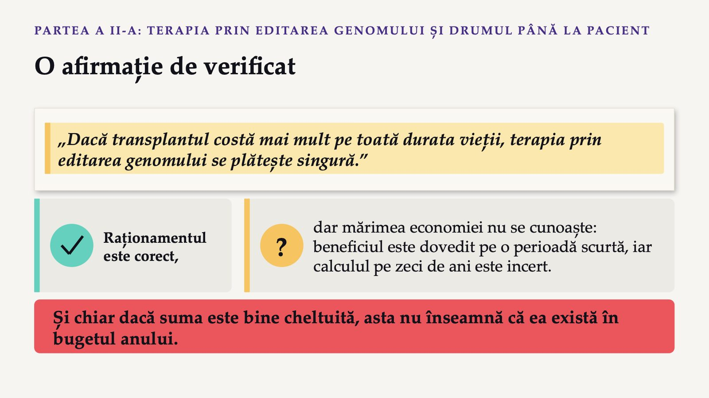
30 / 49O economie viitoare calculată pe o extrapolare nu se scrie ca fapt, ci ca ipoteză, cu durata pe care există date și cu ce se întâmplă cu calculul dacă efectul scade mai repede. Statutul de medicament orfan explică prețul: nu se formează prin concurență, ci prin negociere cu un singur furnizor.
?
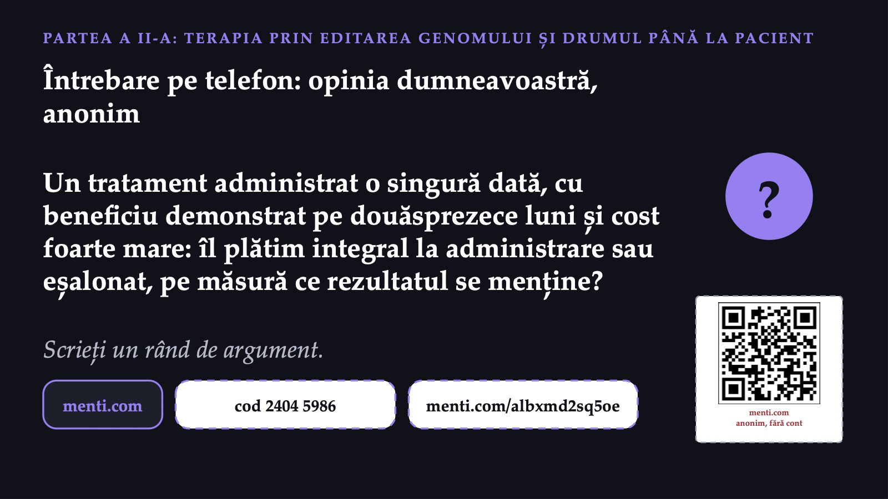
31 / 49Fără nume de instituții; ne interesează argumentul.
Sarcina grupului: nota pentru minister (26 de minute)
 32 / 49
32 / 49Aveți pagina europeană, recomandarea britanică și lista a ce nu am putut documenta: prețul, situația accesului în România, numărul pacienților. Acestea nu se ghicesc; se cer.
Citim împreună, pe loc, cele două puncte
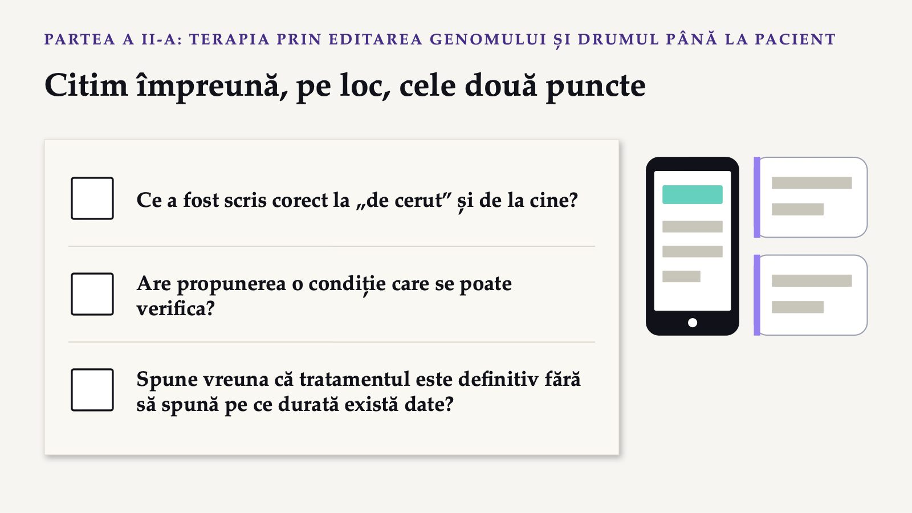
33 / 49Comparăm două sau trei răspunsuri. Întrebarea este aceeași ca în partea întâi: unde a mers afirmația mai departe decât documentul.
Ce reținem din partea a doua
 34 / 49
34 / 49Acestea sunt ideile pe care le-ați folosit în notă.
Partea a treia: copii născuți după editarea embrionului
![PARTEA A III-A: EDITAREA EMBRIONILOR, BIOLOGIA SINTETICĂ ȘI CE SE POATE REGLEMENTA Partea a treia: copii născuți după editarea embrionului ? Un cercetător a anunțat public nașterea unor copii al căror genom fusese modificat când erau embrioni. Scopul declarat era ca ei să fie rezistenți la infecția cu virusul imunodeficienței umane (HIV). Copiii există, iar modificarea se află în fiecare celulă a lor. Documentele de azi: cele două rapoarte ale Organizației Mondiale a Sănătății din 2021 și articolul 13 al Convenției de la Oviedo, ratificată de România.](diapozitive/C09/035.jpg) 35 / 49
35 / 49Cercetătorul nu îl numim pe diapozitive; documentele îl numesc. Ce ne interesează nu este persoana, ci felul în care sistemul a răspuns.
Cum a fost sancționat cercetătorul
![PARTEA A III-A: EDITAREA EMBRIONILOR, BIOLOGIA SINTETICĂ ȘI CE SE POATE REGLEMENTA Cum a fost sancționat cercetătorul A fost urmărit penal în China pentru exercitarea ilegală a medicinii, nu în baza unei legi despre editarea genomului. O știre de pe o secțiune a sitului Curții Supreme a Poporului din China relatează, la 31 decembrie 2019, o pedeapsă de trei ani de închisoare. Este o relatare, nu hotărârea însăși. Fapta a fost sancționată prin dreptul penal obișnuit, după ce copiii se născuseră. O lege care interzice editarea ereditară a fost adoptată acolo abia ulterior.](diapozitive/C09/036.jpg) 36 / 49
36 / 49Lecția pentru comitet: o interdicție de principiu nu este un sistem de control.
Ce prevede textul care obligă România
![PARTEA A III-A: EDITAREA EMBRIONILOR, BIOLOGIA SINTETICĂ ȘI CE SE POATE REGLEMENTA Ce prevede textul care obligă România Articolul 13 al Convenției de la Oviedo: „O intervenție destinată să modifice genomul uman nu se poate face decât din motive preventive, diagnostice sau terapeutice și numai dacă nu are drept scop introducerea unei modificări în genomul descendenților.” Pe scurt: genomul se poate modifica numai pentru prevenție, diagnostic sau tratament și numai dacă modificarea nu trece la descendenți. România a ratificat convenția prin Legea nr. 17/2001 (Monitorul Oficial nr. 103 din 28 februarie 2001). Textul provine dintr-o copie neoficială a legii.](diapozitive/C09/037.jpg) 37 / 49
37 / 49Două condiții cumulative: scopul preventiv, diagnostic sau terapeutic și absența scopului ereditar. Editarea somatică în scop terapeutic este compatibilă cu textul; ameliorarea nu trece prima condiție, editarea cu scop ereditar nu trece pe a doua. Rezerva: pagina oficială a legii cuprinde numai articolul unic de ratificare, iar copia arhivată este scrisă fără diacritice, pe care notele le restituie.
Ce spune Organizația Mondială a Sănătății și de ce nu ajunge
![PARTEA A III-A: EDITAREA EMBRIONILOR, BIOLOGIA SINTETICĂ ȘI CE SE POATE REGLEMENTA Ce spune Organizația Mondială a Sănătății și de ce nu ajunge Directorul general a declarat că ar fi, în acest moment, lipsit de responsabilitate ca cineva să treacă la aplicații clinice ale editării germinale a genomului uman (în traducere). Organizația recomandă ca asemenea cercetări să se facă numai în țările care au reguli proprii și mecanisme de supraveghere. Propune și un registru internațional, dar acesta cuprinde numai studiile clinice, nu și cercetarea de laborator. Toate acestea sunt recomandări, nu reguli obligatorii.](diapozitive/C09/038.jpg) 38 / 49
38 / 49În original, declarația spune: „it would be irresponsible at this time for anyone to proceed with clinical applications of germline human genome editing” (raportul, pagina 16). Aprecierea noastră, nu a raportului: un registru cuprinde numai ce i se declară, iar condiția supravegherii proprii o aplică tocmai statul supravegheat. O reglementare națională strictă, fără cooperare internațională, mută problema, nu o rezolvă.
De la tratament la „îmbunătățire”: unde se trage linia
![PARTEA A III-A: EDITAREA EMBRIONILOR, BIOLOGIA SINTETICĂ ȘI CE SE POATE REGLEMENTA De la tratament la „îmbunătățire”: unde se trage linia Editarea celulelor unui pacient grav bolnav, care își dă acordul, este acceptată. Editarea embrionului pentru a evita o boală genetică gravă, când nu există altă soluție, este încă dezbătută. Modificarea unui om, fără scop medical, nu este admisă de niciunul dintre textele de azi. ? O problemă rămâne fără soluție: cel care moștenește modificarea nu și-a putut da acordul.](diapozitive/C09/039.jpg) 39 / 49
39 / 49Argumentul propriu al sănătății publice nu este nici autonomia, nici demnitatea, ci echitatea: o ameliorare accesibilă celor care o pot plăti ar transforma o inegalitate socială într-o inegalitate biologică, transmisibilă.
Biologia sintetică: aceeași întrebare despre control, pe alt teren
![PARTEA A III-A: EDITAREA EMBRIONILOR, BIOLOGIA SINTETICĂ ȘI CE SE POATE REGLEMENTA Biologia sintetică: aceeași întrebare despre control, pe alt teren Biologia sintetică proiectează și construiește componente ale sistemelor vii din piese standard, după un plan, aproape ca pe niște circuite. În medicină, ea produce medicamente cu ajutorul microorganismelor modificate și senzori care detectează contaminarea apei sau genele de rezistență la antibiotice. Aceeași cercetare poate fi folosită și pentru a face rău. Se numește cercetare cu dublă utilizare. O instituție de sănătate publică are nevoie de un comitet care poate refuza un proiect, de laboratoare încadrate corect și de un canal prin care se raportează cererile suspecte.](diapozitive/C09/040.jpg) 40 / 49
40 / 49Ce s-a schimbat nu este riscul, ci accesibilitatea: problema s-a mutat de la descoperire la asamblare, iar biosecuritatea a devenit o problemă de supraveghere. Convenția internațională privind interzicerea armelor biologice, fără mecanism de verificare, rămâne greu de pus în aplicare.
O tehnologie care, odată eliberată în natură, nu se mai poate retrage: cine decide?
![PARTEA A III-A: EDITAREA EMBRIONILOR, BIOLOGIA SINTETICĂ ȘI CE SE POATE REGLEMENTA O tehnologie care, odată eliberată în natură, nu se mai poate retrage: cine decide? Exemplul discutat: o modificare genetică ce reduce populația țânțarilor care transmit malaria. Argumentul pentru: nicio altă metodă nu promite eliminarea țânțarului. Argumentele împotrivă: nu se poate da înapoi, efectele asupra naturii sunt incerte, iar modificarea se poate răspândi la alte specii. Regulile obligatorii trebuie să existe înainte de prima folosire, nu după.](diapozitive/C09/041.jpg) 41 / 49
41 / 49Efectele trec granițele statului care autorizează. Comunitatea locală, statul, un organism regional sau organizația internațională: întrebarea nu are încă un răspuns instituțional, iar aceasta este, în sine, concluzia de reținut. Agricultura, mediul și datele genetice sunt în note, pentru acasă.
?
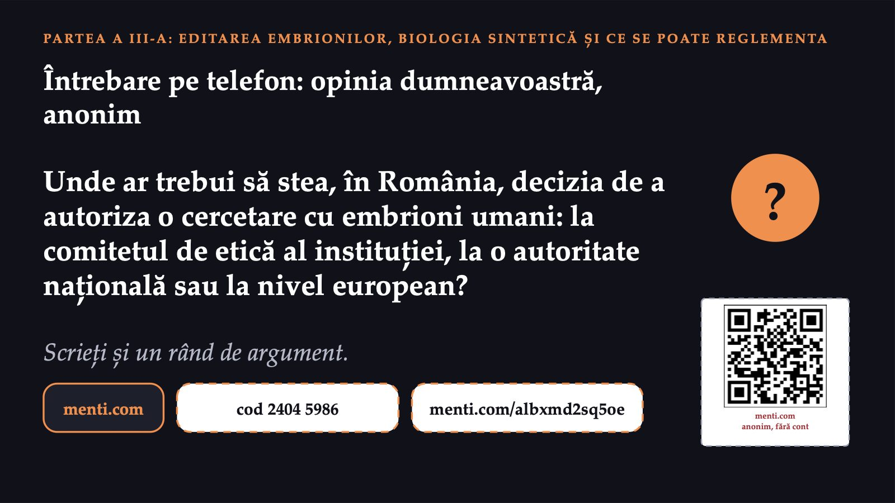
42 / 49Nu există o variantă bună dinainte; răspunsurile dumneavoastră sunt punctul de plecare al comitetelor.
Sarcina comitetului: propunerea pentru România (24 de minute)
![PARTEA A III-A: EDITAREA EMBRIONILOR, BIOLOGIA SINTETICĂ ȘI CE SE POATE REGLEMENTA Sarcina comitetului: propunerea pentru România (24 de minute) Scrieți, în documentul grupului, cel mult o pagină care răspunde la cinci întrebări: 1. Ce lipsește azi între interdicția din lege și un control real? 2. Ce măsură propuneți: una singură, cu actul normativ în care ar intra și instituția care o aplică. 3. Cum se verifică dacă măsura este respectată? 4. Ce raportează România altor state sau organizațiilor internaționale, și cui? 5. Ce nu propuneți, și de ce? La întoarcere trimiteți în Mentimeter, pe rând, numai răspunsurile la întrebările 2 și 3, pe scurt.](diapozitive/C09/043.jpg) 43 / 49
43 / 49Fiecare grup este un comitet. Aveți articolul 13, legea de ratificare, paginile indicate din cele două rapoarte și descrierea cazului public. Criteriul după care comparăm la final: măsura poate fi aplicată efectiv cuiva?
Citim propunerile, pe loc, cu o singură întrebare
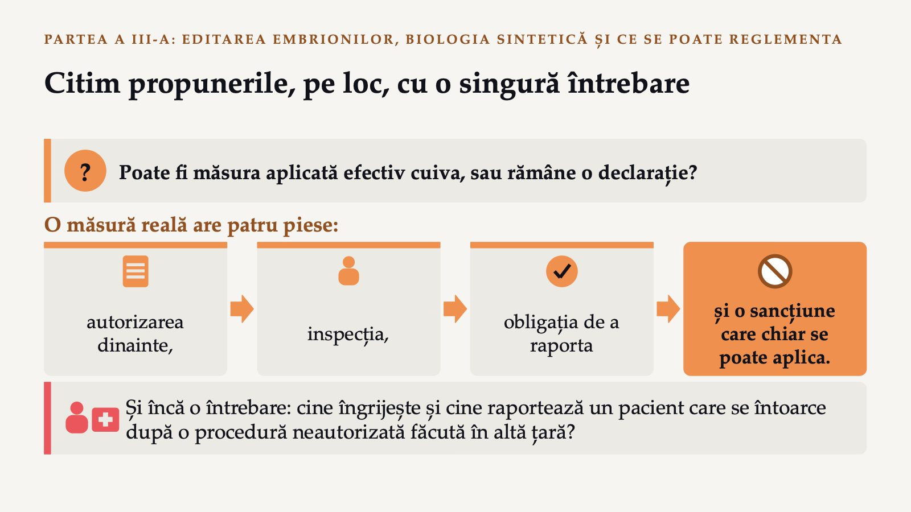
44 / 49Între text și realitate stau patru lucruri: autorizarea prealabilă a activității, inspecția, obligația de raportare și o sancțiune care se poate aplica efectiv faptei. O reglementare națională trebuie să prevadă nu numai ce este interzis aici, ci și cum sunt îngrijiți și raportați cei care se întorc.
Ce reținem din partea a treia
![PARTEA A III-A: EDITAREA EMBRIONILOR, BIOLOGIA SINTETICĂ ȘI CE SE POATE REGLEMENTA Ce reținem din partea a treia Articolul 13 cere două condiții deodată: un scop medical și nicio modificare care trece la descendenți. Cazul public a fost sancționat prin dreptul penal obișnuit: o interdicție de principiu nu este, singură, un sistem de control. Ce propune Organizația Mondială a Sănătății sunt recomandări, nu reguli obligatorii. ? O tehnologie care nu se mai poate retrage are nevoie de reguli obligatorii înainte de prima folosire.](diapozitive/C09/045.jpg) 45 / 49
45 / 49Acestea sunt ideile pe care le-ați folosit în propunere.
?
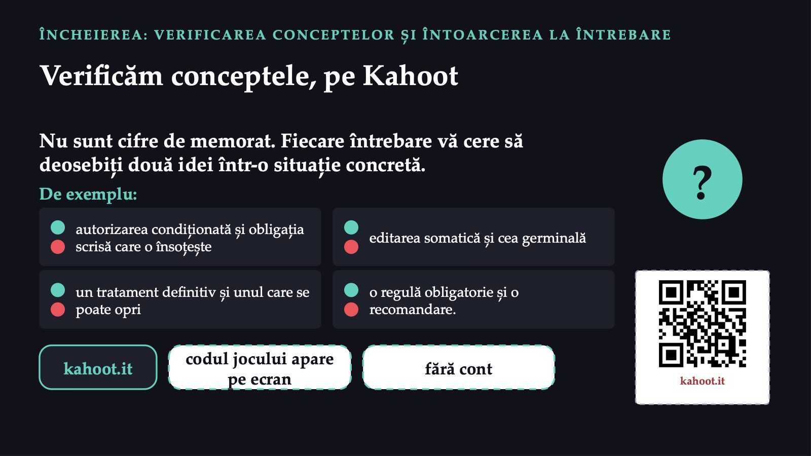
46 / 49Jocul verifică înțelegerea conceptelor, nu memorarea cifrelor. Criteriul care decide fiecare întrebare se află în note, lângă concept.
Înapoi la întrebarea de la început
 47 / 49
47 / 49Comparați fraza de acum cu cea de la începutul ședinței. Accesul, supravegherea și competența instituțională se construiesc înainte, nu după.
Ce nu putem afirma: se cere, nu se ghicește
 48 / 49
48 / 49Lista aceasta este parte din materie: un specialist de sănătate publică trebuie să știe ce nu se poate afirma și de la cine se cere informația.
Ce urmează după ședință
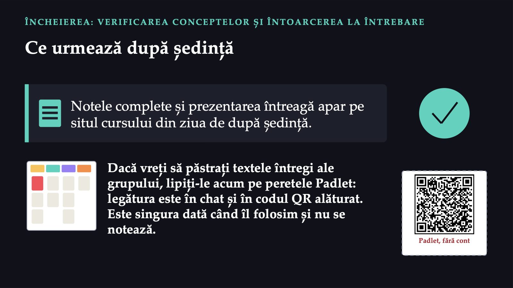
49 / 49Vă mulțumesc.
Săgeți sau spațiu: navigare · O: vedere de ansamblu · N: notele prezentatorului · F: ecran complet · Esc: închidere